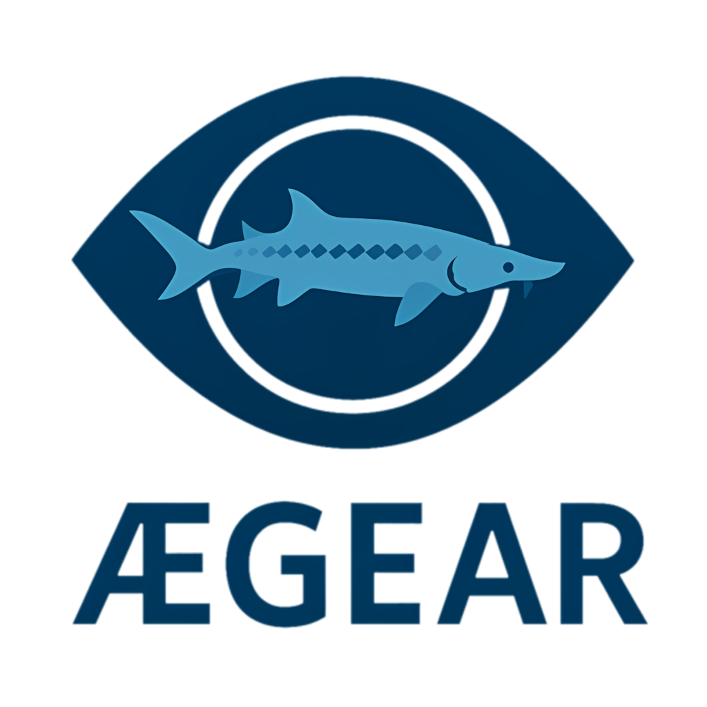
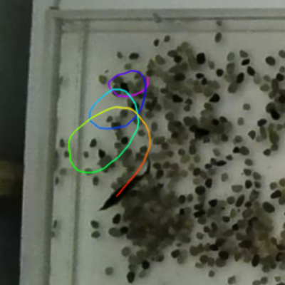
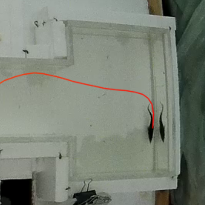

Aegear
Tracking and analyzing fish behavior in controlled aquaculture environments

🏠 Aegear Documentation
Welcome to the Aegear project documentation. Use the links below to navigate:
📚 Table of Contents
-
📦 Installation
Step-by-step guide for setting up Aegear. -
🚀 Usage
Learn how to run Aegear for fish tracking and analysis. -
🎯 Calibration
Detailed instructions on calibrating your camera and tank setup. -
🧠 Training
How to train new models for detection and tracking. -
🐳 Docker
Using Aegear with Docker for could environments setup for training models. -
📖 Tutorial (API)
Walkthrough of Tracking API usage with sample code and explanations. -
📝 API Reference
Full reference of all Aegear modules, classes, and functions. (WIP)
🧠 Project Overview
Aegear is a computer vision toolkit developed for the analysis of fish locomotion in controlled aquaculture environments. Originally designed for behavioral studies on juvenile Russian sturgeon (Acipenser gueldenstaedtii), the system enables robust detection and tracking of individual fish across a range of experimental conditions, including tanks with textured floors and heterogeneous lighting.
The name Aegear draws inspiration from Ægir, the Norse god of the sea, symbolizing its aquatic focus and its role as eye-gear — a visual tool for observation and discovery.




(click on the animated GIF to see the full video)
🔬 Technical Summary
Aegear is a computer vision system for detecting and tracking fish in aquaculture tanks. It was initially applied in the doctoral research of Georgina Fazekas (2020– ), which explored environmental and feeding effects on juvenile sturgeon swimming behavior (A. gueldenstaedtii, A. ruthenus). The toolkit was created to overcome limitations in existing tracking systems, such as idtracker.ai (Romero-Ferrero et al., 2018), which require clean backgrounds and uniform lighting.
At its core, Aegear integrates:
- Detection: A U-Net-style segmentation network with an EfficientNet-B0 encoder backbone, trained via transfer learning on aquaculture-specific datasets.
- Tracking: A Siamese network architecture for appearance-based localization across frames, enabling robust trajectory reconstruction without manual re-identification.
- Calibration: Camera routines for intrinsic parameter estimation and extrinsic scaling from four reference points, allowing trajectory data to be expressed in metric units.
This modular pipeline supports robust fish localization, trajectory analysis, and data augmentation across varied experimental conditions, ensuring reproducibility and adaptability to other species and setups.
🚧 Current Limitations
- Currently limited to single-object tracking; no support yet for multi-class or multi-fish tracking.
- The detection model is trained on sterlet (Acipenser ruthenus) and Russian sturgeon (Acipenser gueldenstaedtii) video data and likely requires additional training for species with significantly different shapes or swimming patterns.
🤝 Contributions & Collaboration
Aegear was originally developed around a single research project in controlled aquaculture environments. While it is currently tailored to tracking fish under specific conditions, we envision Aegear growing into a more general-purpose toolkit for animal tracking in both academic and industrial settings.
We warmly invite:
- 🧑🔬 Researchers in biology, ethology, aquaculture, or other animal behavior fields
- 🏭 Practitioners in industrial monitoring of animal populations
to explore Aegear and contact us for support or potential collaboration.
If your use case involves different species, environments, or tracking requirements, we are happy to:
- Extend Aegear for broader animal tracking scenarios
- Discuss customizations and new features
- Work together on shared challenges in visual tracking systems
📌 Feature Requests: Open a GitHub issue if you require specific capabilities not yet available. We will prioritize these to make Aegear a useful resource for the wider community.
📜 License
This project is licensed under the MIT License.
📖 References
Fazekas, G.: Investigating the effects of environmental factors and feeding strategies on early life development and behavior of Russian sturgeon (Acipenser gueldenstaedtii) and sterlet (A. ruthenus) [Doctoral thesis]. Hungarian University of Agriculture and Life Sciences (MATE), Hungary.
Romero-Ferrero, F., Bergomi, M. G., Hinz, R., Heras, F. J. H., & de Polavieja, G. G. (2018). idtracker.ai: tracking all individuals in small or large collectives of unmarked animals. Nature Methods, 16(2), 179–182. [arXiv:1803.04351]
Tan, M., & Le, Q. V. (2019). EfficientNet: Rethinking Model Scaling for Convolutional Neural Networks. Proceedings of the 36th International Conference on Machine Learning, PMLR 97:6105–6114. arXiv:1905.11946
Bertinetto, L., Valmadre, J., Henriques, J. F., Vedaldi, A., & Torr, P. H. S. (2016). Fully-Convolutional Siamese Networks for Object Tracking. European Conference on Computer Vision (ECCV) Workshops. arXiv:1606.09549